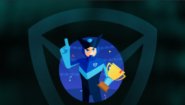
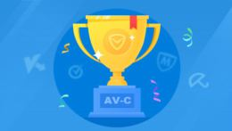

创造历史，世界第一！！
黑客“世界杯”走了，黑客世界总冠军来了！北京时间3月18日上午，首个Pwn2Own世界总冠军诞生！腾讯安全Sniper战队凭借总积分38分名列Pwn2Own积分榜榜首，摘得世界总冠军，并且获得这一顶级赛事史上首个“MasterofPwn”（世界破解大师）称号。这不仅是Pwn2Own史上第一个世界总冠军，也是中国黑客团队首次登上世界之巅！
国际测评，再破纪录
2016年3月，国际权威评测机构AV-Comparatives（以下简称AV-C）公布了2015年全年“真实世界保护测试”成绩，电脑管家（英文版）参与安全奥斯卡AV-Comparatives六项测试，其中四项获得A+评级，以优秀成绩连斩16星，获RealWorldProtection2015铜奖，这也是国内软件在AV-C测评中获得的最佳成绩！

电脑管家，评分A+！
国际知名评测机构AV-Comparatives(AV-C)进行了2016年恶意软件清除能力的认证测试，腾讯电脑管家英文版凭借自研杀毒引擎TAV，以出色的清除能力取得最高分，与卡巴斯基、AVG并列排名世界第一，荣获“ADVANCED+（最佳）”评级。该项测评系腾讯电脑管家英文版今年首度参加，此前，腾讯电脑管家英文版已连续参加AV-C恶意文件检测率测试、基于RTTL的认证测试等多项测评并以最好成绩获“ADVANCED+”评级。